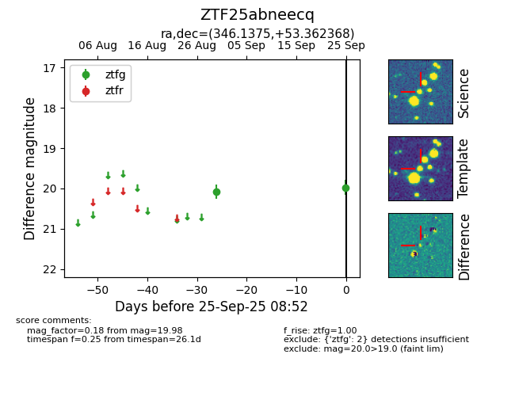

FINK: ZTF25abneecq
Lasair: ZTF25abneecq
ALeRCE: ZTF25abneecq
ZTF25abneecq (ztf,fink)
equatorial (ra, dec) = (346.1375,+53.36237)
galactic (l, b) = (107.2718,-6.22809)

last ztfg=19.98
2 ztfg detections